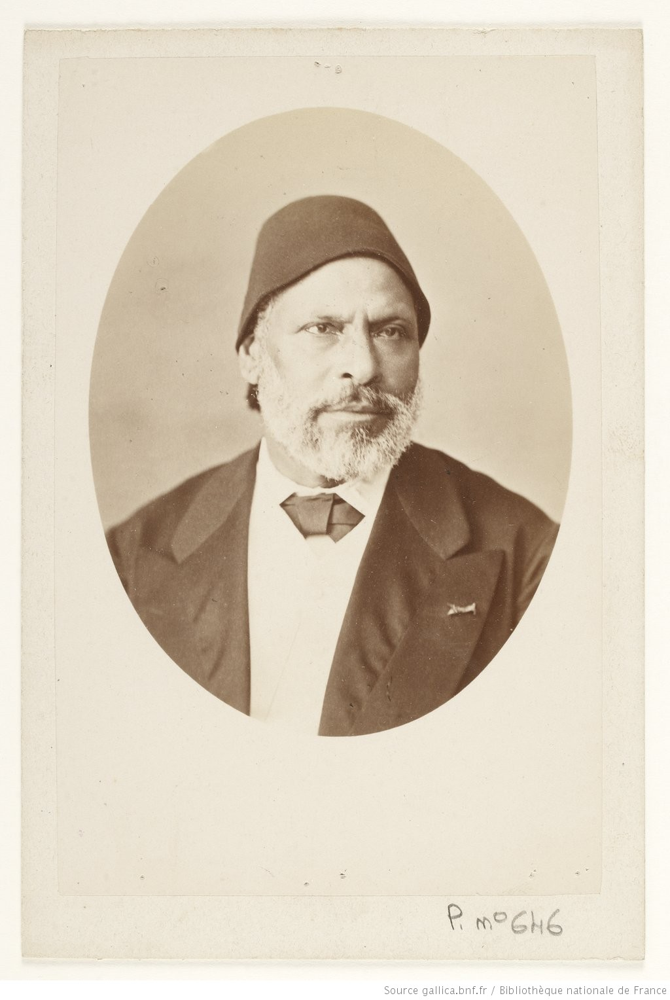

Mahmoud Pasha al-Falaki (1815–1885 M)
Potret Rasmi oleh Alexandre Quinet (1882)
Bibliothèque nationale de France (BnF)
العَالِمُ الفَلَكِيُّ مَحْمُود بَاشَا الفَلَكِي (مَحْمُود بَيْ)
Mahmoud Pasha al-Falaki (1815–1885 M)
Pelopor Astronomi Moden Dunia Arab, Perintis Arkeoastronomi, dan Pengasas Penyelarasan Falak Saintifik Kronologi Sirah Nabawiyyah.
Riwayat Hidup & Perjalanan Keilmuan
Biografi Lengkap (1815–1885 M)Mahmoud Pasha al-Falaki (1815–1885 M / 1230–1302 H) merupakan tokoh agung dalam kebangkitan sains moden di dunia Arab dan Islam (era al-Nahdah). Dilahirkan di perkampungan al-Hissa (الحصة) di wilayah al-Gharbiyyah, Mesir, beliau dibesarkan dalam keluarga sederhana dan menjadi anak yatim pada usia sembilan tahun berikutan kematian bapanya. Beliau kemudiannya dibawa oleh abang sulungnya ke Iskandariah bagi mendapatkan pendidikan teratur.
Pada tahun 1824, beliau memasuki Sekolah Tarsanah Laut (Madrasat Dar al-Sina'ah al-Bahriyyah) di Iskandariah yang diasaskan di bawah pembaharuan Muhammad Ali Pasha. Melihat kecerdasan luar biasanya dalam bidang hisab dan geometri, beliau dihantar menyambung pelajaran ke Madrasat al-Muhandiskhana (Kolej Kejuruteraan Diraja) di Bulaq, Kaherah. Beliau menamatkan pengajiannya pada tahun 1839 sebagai graduan terbaik (tempat pertama) dan terus dilantik sebagai tenaga pengajar matematik dan falak.
«إِنَّ الحِسَابَ الفَلَكِيَّ القَاطِعَ هُوَ المِيزَانُ العَدْلُ الَّذِي تَتَطَابَقُ فِيهِ الشَّوَاهِدُ التَّارِيخِيَّةُ مَعَ سُنَنِ اللَّهِ فِي الكَوْنِ»
"Sesungguhnya perkiraan falak yang qat'i adalah neraca keadilan yang melaluinya kesaksian sejarah bersatu padu dengan sunnatullah di alam semesta."
— Mukadimah Nata'ij al-Afham (1887 M)
Pada tahun 1842, ketika berusia 27 tahun, Mahmoud Pasha mencipta sejarah dengan menterjemah dan menerbitkan buku pertama mengenai kalkulus pembezaan dan kamiran (علم التفاضل والتكامل) ke dalam bahasa Arab, membuka pintu penyelidikan sains matematik lanjutan di Timur Tengah.
Atas cadangan menteri pembaharuan tersohor Ali Pasha Mubarak, Mahmoud Pasha dipilih mengetuai misi saintifik Mesir ke Perancis pada tahun 1850. Selama 9 tahun di Paris dan Brussels, beliau menjalankan kajian cerapan falak dan mekanik cakerawala di Observatoire de Paris dan bekerjasama rapat dengan ahli falak dan statistik tersohor Belgium, Adolphe Quetelet. Beliau turut melaksanakan pengukuran geomagnet bumi di serata Eropah dan Mediterranean yang melayakkannya dilantik sebagai Ahli Koresponden Académie Royale des Sciences de Belgique.
Sekembalinya ke Mesir pada 1859, beliau dilantik memimpin Balai Cerap Astronomi Abbasiyyah di Kaherah, memimpin ekspedisi gerhana matahari penuh ke Dongola (Sudan) pada 1860, memetakan topografi seluruh Mesir, dan menghasilkan peta arkeologi bandar Iskandariah purba (1872). Menjelang akhir hayatnya, beliau dilantik sebagai Menteri Kerja Raya (1882) dalam kabinet Mahmoud Sami al-Baroudi, Wakil Menteri Pendidikan (1882–1884), dan Presiden Persatuan Geografi Khidiwiyyah (1882–1885) sehinggalah beliau menghembuskan nafas terakhir pada 19 Julai 1885 di Kaherah.
Kajian Falak & Metodologi Penyelarasan Sirah
Karya Agung 1858 / 1887 MPencapaian paling agung Mahmoud Pasha al-Falaki yang menjadi asas rujukan projek ini terkandung dalam risalah klasiknya yang dibentangkan di Paris pada tahun 1858 bertajuk «Mémoire sur le calendrier arabe avant l'islamisme, et sur la naissance et l'âge du prophète Mohammad», yang kemudiannya diterjemahkan ke dalam bahasa Arab oleh Ahmad Zaki Pasha pada 1305 H / 1887 M dengan tajuk «نتائج الأفهام في تقويم العرب قبل الإسلام وفي تحقيق مولد النبي وعمره عليه الصلاة والسلام».
Sebelum kajian beliau, sejarawan dan ahli sirah sering berhadapan dengan kekaburan dan percanggahan riwayat klasik mengenai tarikh peristiwa-peristiwa penting kenabian. Mahmoud Pasha menggabungkan jadual astronomi moden Alexis Bouvard (Bureau des Longitudes de France), kalkulus orbit bulan, serta kaedah kritik hadis sanad bersambung bagi membina 4 tunjang falak mutlak:
1. Sauh Gerhana Matahari di Madinah
Paksi mutlak penanggalan: Pada pagi wafatnya putera Nabi ﷺ, Ibrahim, gerhana matahari anulus berlaku di langit Madinah (puncak 8:30 pagi, litupan 87% / 10.5 jari). Disahkan hadis Sahih al-Bukhari (No. 1043) & Muslim bahawa matahari tidak gerhana kerana mati atau lahirnya sesiapa.
2. Kepastian Hari Isnin Kelahiran
Berdasarkan hadis Sahih Muslim bahawa Rasulullah ﷺ lahir pada hari Isnin ("ذاك يوم ولدت فيه"). Pengiraan konjungsi bulan membuktikan bahawa 9 Rabiulawal 571 M jatuh tepat pada hari Isnin (20 April 571 M Julian), manakala tarikh masyhur 12 Rabiulawal jatuh pada hari Khamis.
3. Penyelesaian Misteri Sistem Nasi'
Membongkar amalan sisipan bulan lompat kaum Quraisy selama lebih 200 tahun. Perkiraan falak membuktikan bahawa pada tahun 10 H, kitaran anjakan sisipan telah berputar genap 360°, mengesahkan sabda Nabi ﷺ bahawa masa telah berputar kembali ke asal penciptaan langit dan bumi.
4. Qiran Agung Zuhal & Musytari
Pengesahan catatan ahli falak silam (Abu Ma'shar, al-Maghribi). Al-Falaki mengira koordinat tepat dua gergasi gas: Musytari di 215° 02' dan Zuhal di 215° 17' di buruj Scorpio sejurus sebelum kelahiran Junjungan Besar ﷺ.
Bukti Falak: 9 Rabiulawal Lawan 12 Rabiulawal
Perbandingan Matematik & HadisDalam bab kedua kitab Nata'ij al-Afham, Mahmoud Pasha membentangkan analisis terperinci yang membuktikan mengapa tarikh 9 Rabiulawal adalah satu-satunya tarikh yang sahih secara falak dan sepadan dengan hadis nabawi:
«سُئِلَ رَسُولُ اللَّهِ ﷺ عَنْ صَوْمِ يَوْمِ الاِثْنَيْنِ فَقَالَ: "ذَاكَ يَوْمٌ وُلِدْتُ فِيهِ، وَيَوْمٌ أُنْزِلَ عَلَيَّ فِيهِ"»
"Rasulullah ﷺ ditanya mengenai puasa hari Isnin, lalu baginda bersabda: 'Itulah hari aku dilahirkan, dan hari diturunkan wahyu kepadaku.'"
— Sahih Muslim, Kitab al-Siyam (Hadis No. 1162)
| Parameter Perkiraan | Pendapat 9 Rabiulawal (Tahqiq Falaki) | Pendapat 12 Rabiulawal (Masyhur) |
|---|---|---|
| Hari dalam Seminggu | Hari Isnin (Al-Ithnayn) ✅ | Hari Khamis (Al-Khamis) / Jumaat ❌ |
| Kesesuaian dengan Sahih Muslim | Menepati 100% matan hadis nabawi yang qat'i. | Bercanggah secara matematik dengan hadis hari Isnin. |
| Tarikh Masihi Julian | 20 April 571 M | 23 / 24 April 571 M |
| Tarikh Masihi Gregorian | 22 April 571 M | 25 / 26 April 571 M |
| Konjungsi Bulan (Ijtimak) | 11 April 571 M (16:30 petang waktu Makkah). Anak bulan kelihatan petang 11/12 April, menjadikan 1 Rabiulawal jatuh pada hari Ahad 12 April. Hari ke-9 = Isnin 20 April. | Jika 1 Rabiulawal adalah Ahad 12 April, hari ke-12 secara mutlak jatuh pada hari Khamis 23 April. Tidak wujud sebarang kebarangkalian anak bulan lewat 3 hari penuh. |
| Ulama & Pengkaji yang Memperakui | Humayd ibn Zanjawayh, Abu Ma'shar al-Falaki, Ibn Hazm al-Andalusi, Mahmoud Pasha al-Falaki, Syeikh Safiur-Rahman al-Mubarakfuri (al-Rahiq al-Makhtum). | Ibn Ishaq, sebahagian besar ahli sejarah lewat zaman (secara riwayat lisan tanpa semakan kalendar astronomi). |
Kajian Mahmoud Pasha membuktikan bahawa kekeliruan tarikh 12 Rabiulawal berlaku dalam kalangan sejarawan terkemudian yang menyamakan tarikh kewafatan Rasulullah ﷺ (12 Rabiulawal 11 H) dengan tarikh kelahiran baginda, sedangkan perkiraan hari bulan astronomi membuktikan bahawa hari Isnin kelahiran baginda jatuh pada 9 Rabiulawal Tahun Gajah.
Sumbangan Saintifik & Arkeologi Lain
Arkeoastronomi & GeodesiPeta Arkeologi Iskandariah Purba (1872 M)
Atas titah Khedive Ismail bagi memenuhi permintaan Maharaja Perancis Napoleon III, Mahmoud Pasha menjalankan penggalian dan tinjauan ukur tanah terperinci di bawah runtuhan Iskandariah, memetakan semula jalan-jalan grid purba, tembok kota, sistem kolam bawah tanah, dan lokasi makam Iskandar Zulkarnain.
Ekspedisi Gerhana Dongola, Sudan (1860 M)
Mengetuai delegasi saintifik antarabangsa ke Dongola di utara Sudan untuk merakam cerapan gerhana matahari penuh pada 18 Julai 1860, membentangkan ukuran kronometrik dan spektrum korona suria yang mendapat pujian Académie des Sciences di Paris.
Buku Kalkulus Pertama Bahasa Arab (1842 M)
Menterjemah dan mengarang kitab kalkulus pembezaan dan kamiran pertama dalam perbendaharaan ilmu bahasa Arab untuk kegunaan jurutera dan saintis kolej teknik Mesir di Bulaq.
Teori Hidrologi & Paras Banjir Sungai Nil
Membangunkan model matematik ramalan kenaikan air banjir Sungai Nil berasaskan pola monsun Habsyah dan tolok Nilometer di Pulau Roda, Kaherah, yang menjadi asas sistem saliran pertanian Mesir.
Garis Masa Hayat Mahmoud Pasha al-Falaki
Kronologi 1815–1885 MKelahiran di Al-Hissa, Gharbia
Dilahirkan dalam keluarga petani sederhana di perkampungan al-Hissa, wilayah Gharbia, Mesir. Menjadi anak yatim pada usia 9 tahun berikutan kewafatan bapa tercinta.
Pendidikan Tentera Laut di Iskandariah
Memasuki Sekolah Tarsanah Dar al-Sina'ah di Iskandariah, menonjolkan bakat luar biasa dalam ilmu hisab, pelayaran, dan geometri perkapalan.
Puncak Pengajian di Muhandiskhana
Menuntut di Kolej Kejuruteraan Diraja Bulaq, Kaherah. Lulus cemerlang di tempat pertama pada 1839 dan terus dilantik sebagai mahaguru matematik dan astronomi.
Penerbitan Kitab Kalkulus Pertama Bahasa Arab
Menerbitkan risalah 'Ilm al-Tafadul wa-al-Takamul di Matba'ah Bulaq, membuka fasa baharu pendidikan matematik moden di dunia Arab.
Misi Saintifik 9 Tahun di Paris & Brussels
Dihantar ke Balai Cerap Paris dan Brussels. Menjalankan kajian mekanik cakerawala, medan magnet bumi, serta menganggotai badan-badan sains terulung Eropah.
Penerbitan Karya Agung Kronologi Sirah di Paris
Menerbitkan Mémoire sur le calendrier arabe avant l'islamisme di Paris melalui Journal Asiatique dan Imprimerie Impériale, menetapkan tarikh Mawlid 9 Rabiulawal (20 April 571 M) dan mengesahkan gerhana Madinah 632 M.
Ekspedisi Gerhana Matahari di Dongola, Sudan
Memimpin misi sains rasmi ke Nubia bagi mencerap gerhana matahari penuh 18 Julai 1860, memantapkan kedudukan Mesir dalam arena falak antarabangsa.
Penggalian Arkeologi & Pemetaan Iskandariah Purba
Menyiapkan peta arkeologi Iskandariah purba dan menerbitkan monograf Mémoire sur l'antique Alexandrie di Copenhagen (1872).
Menteri Kerja Raya, Pendidikan & Presiden Geografi
Dilantik Menteri Kerja Raya dalam kabinet Mahmoud Sami al-Baroudi, Timbalan Menteri Pendidikan (1882–1884), dan Presiden Persatuan Geografi Khidiwiyyah.
Kewafatan di Kaherah
Menghembuskan nafas terakhir pada usia 70 tahun di Kaherah. Disemadikan dengan penuh penghormatan di tanah perkuburan berhampiran makam Imam al-Shafi'i.
Penerbitan Kitab 'Nata'ij al-Afham' di Matba'ah Bulaq
Terjemahan bahasa Arab karya agung beliau diterbitkan secara rasmi oleh Ahmad Zaki Pasha di al-Matba'ah al-Kubra al-Amiriyyah, Bulaq, Mesir.
Senarai Rujukan Berwibawa & Pautan Terus Digital
Manuskrip, Arkib & Teks KlasikSemua data falak, kronologi, dan teks yang digunakan dalam inisiatif Prophetic Timeline ini disahkan bersandarkan kepada penerbitan asal, manuskrip arkib kebangsaan, dan sumber-sumber muktabar berikut. Klik mana-mana pautan di bawah untuk membaca atau memuat turun naskhah digital rasmi: